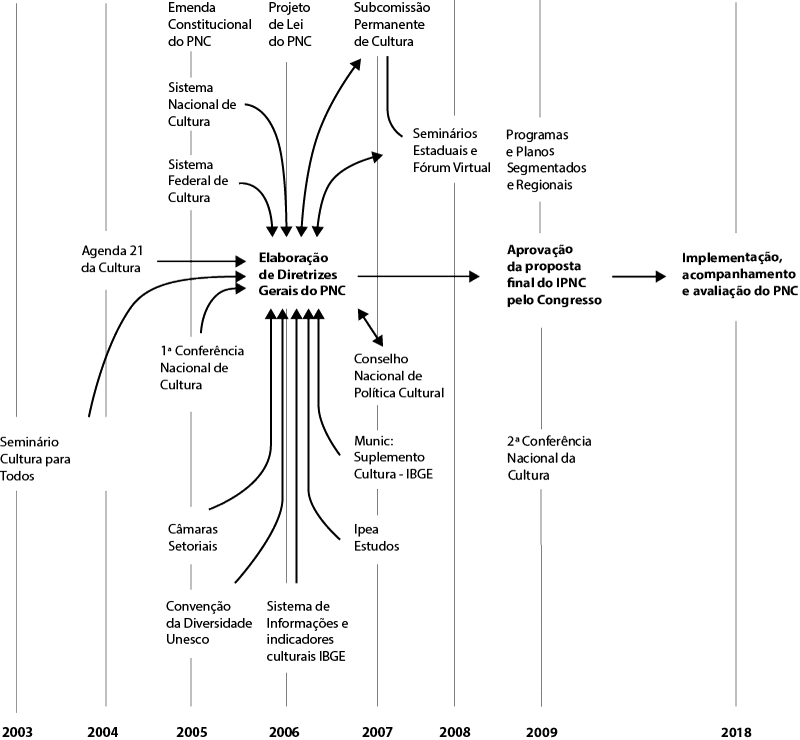

05. Plano nacional de cultura
O Brasil é um país extenso territorialmente e portador de uma diversidade cultural muito grande.
Para compreendermos o processo histórico de criação das políticas públicas culturais no Brasil é importante nos reportamos à obra de Tolentino (2007). Conforme nos diz o autor, a forte influência estatal nos diversos âmbitos da vida dos habitantes do Brasil- Colônia e do Brasil-Império era evidente, especialmente, no final do século XIX e início do século XX, onde se via no país uma valorização da cultura erudita. Já haviam sido criados, quando da chegada de D. João VI e mudança da corte portuguesa para o Brasil, a Biblioteca Nacional, a Escola Nacional de Belas Artes e o Instituto Histórico e Geográfico Brasileiro. Estas foram as primeiras instituições culturais brasileiras, cuja importância se deve ao fato de terem a incumbência de reunir a documentação e obras artísticas, que registrasse a história do recente Estado e atestasse a grandeza cultural da nação brasileira (TOLENTINO, 2007, 14-18).
Entretanto, somente na década de 1930, com a reformulação de políticas públicas, a ampliação dos serviços ofertados pelo Estado e a valorização da cultura popular, que começam a surgir no país as primeiras políticas de cultura, muito assentadas nas ações de preservação do patrimônio histórico e artístico brasileiro, como preconizava a Constituição Federal de 1934.
Página 77Tal Constituição foi a primeira a tratar da proteção dos objetos de interesse histórico e do patrimônio artístico brasileiro. É importante destacar que a década de 30 inseriu ingredientes novos no panorama cultural brasileiro.
A partir da revolução de 30, o Estado varguista, fortalecido e ampliado, passou a interferir nas relações de trabalho, nos sistemas de educação e saúde, no movimento estudantil e, inclusive, na organização da cultura. As evidências da interferência do Estado na área cultural podem ser observadas através do Decreto de criação do Curso de Museus (1932), do Decreto que elevou Ouro Preto à categoria de monumento nacional (1933), do Decreto que organizou o serviço de inspeção dos monumentos nacionais, com sede no Museu Histórico Nacional (1934), da Lei que criou o Serviço do Patrimônio Histórico e Artístico Nacional – SPHAN e o Museu Nacional de Belas Artes (1937) instituiu o tombamento e se transformou no mais importante documento legal, ainda em vigor, referente à preservação dos bens culturais.
Durante o regime militar, do mesmo modo que em períodos anteriores, a produção e regulação da cultura foram centralizadas nos órgãos do Estado. O cinema, por exemplo, tornou- se por excelência produto do governo. Em 1966, foi criado o Instituo Nacional do Cinema, embrião da Empresa Brasileira de Filmes – Embrafilme, instituída em 1969. Ou seja, o Estado passou a coordenar a produção cinematográfica, atuando como co-produtor e distribuidor, deixando de ser simplesmente o mediador e regulador da área.
Foi também durante o governo militar que se esboçou, pela primeira vez, uma política oficial de cultura, envolvendo vários setores da atividade cultural. Entre fins de 1960 e início de 1970, foi criado o Plano de Ação Cultural, que definia as metas para buscar resultados mais diretos na cultura. Para Tolentino (2007), somente após o período militar, a cultura passou a atrair a atenção empresarial, tornando-se um grande negócio. Nesse sentido, as ações do Estado para cultura se consolidaram a partir de 1980, quando se criou o Ministério da Cultura - MinC. Desse momento em diante, a cultura passou a ser considerada como tema de debate econômico, político e social.
Considerando o exposto acima, é possível observar que o processo de oficialização da cultura como tema de política pública do Estado no Brasil teve seu início nos anos 1930. Nos anos 1980, novas possibilidades surgiram com a criação do Ministério da Cultura, que foi desvinculado do Ministério da Educação. Tolentino (2007) destaca que:
Anteriormente à Constituição Federal de 1988 – CF/88, a primeira experiência de delimitação de incentivo à cultura por meio de renúncia fiscal no ordenamento jurídico brasileiro pode ser encontrada na Lei nº 7.505, de 2 de julho de 1986, conhecida como Lei Sarney. Essa lei dispunha sobre benefícios fiscais na área do imposto de renda concedidos a operações de caráter cultural ou artístico e definia, por meio de suas disposições, procedimentos para doação, patrocínio e investimento na área cultural e seus campos de abrangência. Antes da Lei Sarney, as empresas doavam recursos a projetos culturais sem nenhuma contrapartida direta; o único incentivo era o retorno de imagem. Após a CF/88, foi editada a Lei nº 8.313, de 23 de dezembro de 1991, conhecida como Lei Rouanet. Essa Lei restabelece os princípios da Lei nº 7.505/86 e cria o Programa Nacional de Apoio à Cultura – Pronac. As finalidades e objetivos do Pronac previstos em lei são inspirados nos artigos 215 e 216 do texto constitucional e, para cumpri-los, o Programa prevê dois mecanismos básicos de apoio a projetos culturais: O Fundo Nacional de Cultura - FNC e o Incentivo a Projetos Culturais – Mecenato, já explicitados acima. Dois anos após a edição da Lei Rouanet, foi promulgada a Lei nº 8.685/93, conhecida como Lei do Audiovisual. Utilizando a mesma sistemática da Lei Rouanet, o governo passa a conceder isenção fiscal a investidores em produções audiovisuais, concentrando a captação de recursos para o cinema (TOLENTINO, 2008, 13).
Página 78Em 2003, o Ministério da Cultura propôs um projeto para alterar a Lei Rouanet. De junho a agosto de 2003, o Ministério da Cultura promoveu o conjunto de seminários “Cultura para Todos”, com o objetivo de discutir e propor um novo modelo de financiamento da cultura. Os seminários aconteceram em 15 cidades brasileiras e envolveram artistas, produtores culturais, servidores do próprio Ministério e secretários de cultura de todo o país (TOLENTINO, 2007).
A partir de 2003, uma série de políticas públicas foram criadas, assim como o Plano Nacional de Cultura - previsto na Constituição Federal por meio da Emenda Constitucional n. 48, em 2005. A metodologia adotada para a sua concepção previu a realização de uma série de seminários pelo país, um amplo debate por meio da internet. Com o desenvolvimento dessas atividades foi possível que o Legislativo e o Executivo agregassem à "formulação do PNC o conhecimento e a experiência dos indivíduos e redes sociais que vivem a cultura brasileira, qualificando o debate público e as políticas culturais" (PNC, 2006).
Todo esse processo resultou na aprovação pelo Congresso Nacional, em 2010, do primeiro Plano Nacional de Cultura. Um plano decenal que tem como um dos principais objetivos o de marcar o efetivo ingresso da área da cultura no campo das políticas públicas. A sua construção teve como ponto de referência as propostas de diretrizes deliberadas na primeira Conferência Nacional de Cultura, e pelos dados coletados por meio de inúmeras consultas públicas realizadas com variados grupos nas mais diversas regiões do país. O PNC apresenta como premissa principal que:
A igualdade e a plena oferta de condições para a expressão e fruição culturais são cada vez mais reconhecidas como parte de uma nova geração dos direitos humanos. Mas, para que tais direitos sejam incorporados ao cenário político e social brasileiro é necessário que um amplo acordo entre diferentes setores de interesse defina um referencial de compartilhamento de recursos coletivos. O estatuto legal dos direitos culturais, em nível nacional e internacional, necessita portanto, ser fortalecido por consensos que garantam sua legitimidade. O Plano Nacional de Cultura (PNC) representa um importante passo nessa direção (PNC-DIRETRIZES, 2008, 10).
O processo de construção do PNC considerou "as demandas culturais dos brasileiros e brasileiras de todas as situações econômicas, localizações geográficas, origens étnicas, faixas etárias e demais situações identitárias" (PNC-DIRETRIZES, 2008, p. 10), pois é visível a grande diversidade cultural e social existente no Brasil. Por isso, a proposta de criação de um Plano Nacional de Cultura para o país deve levar em consideração o "dever de fomentar o pluralismo, coibir efeitos das atividades econômicas que debilitam e ameaçam valores e expressões dos grupos de identidade e, sobretudo, investir na promoção da equidade e universalização do acesso à produção e usufruto dos bens e serviços culturais" (PNC-DIRETRIZES, 2008, p. 10). Propôs-se transcender as linguagens artísticas por acreditar que a diversidade cultural é o maior patrimônio da população brasileira, sendo que a criação do PNC articulou as diversas dimensões da cultura: dimensão simbólica; dimensão cidadã e dimensão econômica.
Página 79A elaboração do PNC ocorreu em conformidade com o artigo 215 da Constituição Brasileira e se orienta pela determinação de que: “o Estado garantirá a todos o pleno exercício dos direitos culturais e acesso às fontes da cultura nacional, e apoiará e incentivará a valorização e a difusão das manifestações culturais”. A estrutura do documento é composta de cinco capítulos, sendo que 14 diretrizes, 36 estratégias e 275 ações são enunciadas em cada um destes capítulos. Foram previstas uma série de ações, medidas e procedimentos através dos quais deverão ser estabelecidas as relações dos governos municipais com o governo federal. No que diz respeito ao Sistema Nacional de Cultura, previu-se que a adesão voluntária dos municípios e o repasse de recursos, preferencialmente, através de um fundo municipal de cultura, acompanhado e fiscalizado pelo Conselho de Cultura local. Os municípios que aderirem ao PNC devem também produzir e fornecer informações regulares para a atualização do Sistema Nacional de Informações e Indicadores Culturais, que está sendo construído pelo Ministério da Cultura. Este deverá estabelecer os padrões de cadastramento, tipologias de mapeamentos e formas de geração de informações de maneira a permitir a construção de um sistema de efetivo alcance nacional e a subsidiar a elaboração de políticas públicas. Abaixo, segue a linha do tempo do PNC:
Segundo a comissão responsável pela elaboração do PNC, o plano se trata de um processo compartilhado e contínuo e, como tal, seu amadurecimento e sua realização dependerão permanentemente do acolhimento de diversas articulações políticas e sociais. O PNC surgiu como um mecanismo para "viabilizar o diálogo duradouro entre indivíduos e coletividades criadoras, organizações, movimentos sociais e grupos culturais, empresas e empreendedores que atuem na área cultural, usuários e consumidores e os cidadãos em geral" (PNC-DIRETRIZES, 2008, p. 10).
Entretanto, alguns pontos que compunham o texto inicial do PNC precisaram ser revistos. Isso ficou patente no relato da deputada Fátima Bezerra sobre o Projeto de Lei nº 6.835, de 2006, que aprovou o Plano Nacional de Cultura. A relatora considerou os pontos positivos do PNC, entretanto destacou a existência de lacunas que precisavam ser preenchidas e sugeriu a contemplação de importantes aspectos presentes na agenda cultural do séc. XXI, tais como cultura digital, cultura e desenvolvimento autossustentável, turismo cultural, cultura e novos suportes de informação e tecnologia, entre outros.
Ao propor um substitutivo para o referido Projeto de Lei, um questionamento orientou a reflexão da relatora: "Que política cultural queremos para o nosso país frente a quatro desafios que se nos apresentam?" Os desafios citados por ela dizem respeito a aspectos culturais da sociedade brasileira e que seguem transcritos abaixo:
- A diversidade étnico-cultural é nossa grande riqueza: Que política cultural queremos para um País marcado por forte diversidade cultural, fruto de nossa formação histórico- social? Entendida a diversidade cultural como a construção social e histórica das diferenças, como fazer para que as diferentes formas do fazer cultural dos variados grupos étnico-culturais estejam presentes no Plano Nacional de Cultura? Como fazer para que a construção de uma política pública de cultura não tome a identidade nacional como um conjunto monolítico e único, mas que reconheça e valorize as nossas diferenças culturais, “como fator para a coexistência harmoniosa das várias formas possíveis de brasilidade”?
- a cultura como mecanismo de inclusão social: Que política cultural queremos para um País que, em pleno séc. XXI, ainda apresenta um dos maiores índices de concentração de renda, desigualdade econômica e profundas contradições sociais? Como a cultura pode se tornar um elemento crucial para a inclusão de amplos setores da sociedade que não tem acesso aos bens e equipamentos culturais, uma vez que a exclusão social é também de ordem cultural?
- a cultura como vetor para a construção de uma cultura política democrática: Que política cultural queremos para um País que, ao longo de sua história, têm uma tradição de autoritarismo que permeia diferentes instâncias do poder e da sociedade? Que mecanismos devemos criar para que a gestão da cultura seja realmente democrática e participativa?
- a cultura que afirme a identidade da nação: Que política cultural queremos para um País no contexto do processo de globalização, que não é apenas econômica, mas, também, cultural? Que instrumentos legais de preservação, defesa e valorização dos bens culturais nacionais podemos estabelecer numa política cultural que minimize os efeitos perversos da globalização, que tenta homogeneizar os padrões de comportamento e consumo, que influenciam a linguagem e os modos de vida da população?
Considerando tais questionamentos lhes trazemos mais dois para que possam refletir sobre a sua realidade local, o seu município, a sua região.
É possível propor a criação de políticas públicas culturais para o seu município e região?
Para finalizar, reforço a ideia de que os direitos culturais se relacionam com a cultura de cada sociedade e o acesso a esses direitos só será possível a partir do momento que cada indivíduo se sinta responsável pela sua produção cultural. Neste sentido, reporto-me às palavras de Ricardo Oriá:
O direito de produção cultural parte do pressuposto de que todos os homens produzem cultura. Todos somos, direta ou indiretamente, produtores de cultura. É o direito que todo cidadão tem de exprimir sua criatividade ao produzir cultura.
O direito de acesso à cultura pressupõe a garantia de que, além de produzir cultura, todo indivíduo deve ter acesso aos bens culturais produzidos por essa mesma sociedade. Trata-se da democratização dos bens culturais ao conjunto da população.
E, finalmente, o direito à memória histórica como parte dessa concepção de Cidadania Cultural, segundo o qual todos os homens têm o direito de ter acesso aos bens materiais e imateriais que representem o seu passado, a sua tradição e a sua História (ORIÁ, 2008, p. 21).
Bom curso a todos e todas!